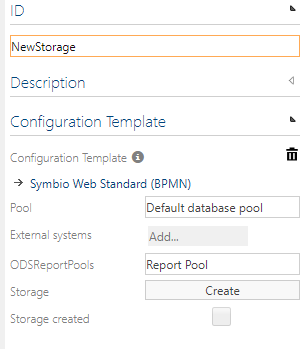

Configuration
Configuration for the RMS
Reporting micro service and config store
- The reporting micro service has to deployed on an accessable machine to ensure proper communication to both sides, Symbio on the one hand and the used reporting services (e.g. SSRS) on the other hand.
- Navigate to the installation directory of your RMS and open the appsettings file. Now edit the connection string to your RMS-ConfigStore and the ConfigStoreTableName
json { "ConnectionStrings": { "ConfigStoreConnection": "Server=[SERVER];Database=[CONFIG-DATABASE];Trusted_Connection=True;" }, "ConfigStoreTableName": "[CONFIG-TABLE-NAME]", - Create the RMS-ConfigStore database. Use the [CONFIG-DATABASE] name stored in the appsettings connection string.
The config store table itself ConfigStoreTableName has to be maintained with some settings to ensure correct functionality, e.g. the authentication token mentioned above. After maintaining the values, the table should look like this.

| Key | Value |
|---|---|
| authToken | The token with which Symbio authenticates itself to the Microservice (This value is Custom, here you can use whatever you like) |
| SsrsSettings.SoapEndpointUrl | https://HOST_NAME:HOST_PORT/REPORT_SERVER_NAME/reportService2010.asmx |
| SsrsSettings.SourceFolder | The name of the source folder in the SSRS. The default is _Template |
| SsrsSettings.RootPath | The root path for the reports. The default is / |
| SsrsSettings.SoapDomain | Credentials: domain of the user to use for the datasource connection (Binding entry if the connection string in Symbio uses Integrated Security) |
| SsrsSettings.SoapUsername | Credentials: username to use for the datasource connection (Binding entry if the connection string in Symbio uses Integrated Security) |
| SsrsSettings.SoapPassword | Credentials: password of the user to use for the datasource connection (Binding entry if the connection string in Symbio uses Integrated Security) |
| StillAliveCron | Optional parameter that ensures AlwaysOn. Recommended for OnPrem installations. Cron value indicates time until the next ping. (*/1 * * * * => Means a ping every minute.) |
Last check
Open a browser and navigate to your Microservice URL. If your service is configured correctly, you will see a page with a simple login dialog.
If an error is displayed on the website, check the configuration and look it up in troubleshooting of your RMS.
Configuration in Symbio
External System/Report Pool
- To configure the report pool and therefore the micro service navigate to the sysadmin/_admin level and choose the external systems.
Select the type Report Pool and create a new one. Provide the corresponding settings.

- URL: The url is the concrete to url to the endpoint of the reporting microservice. On a local machine this could be e.g.
http://localhost:64689/ - Authentication token: For basic authentication provide a token, which can be an arbitrary string. This token is used to authenticate symbio against the micro service.
- NOTE: This token has to be defined in the ConfigStoreDatabase as well.
- Connection string: This is the full connection string to the the database that should be used/setup for the reporting, e.g. (Server=SERVER_NAME;Initial Catalog=ODS_DATABASE_NAME;Integrated Security=true;MultipleActiveResultSets=False;Encrypt=False;TrustServerCertificate=False;Connection Timeout=30;). Without Integrated Security, user and password must be entered.
- Cron expression: You may provide a valid cron expression to state the interval, in which a full fetch should be performed to update the whole ods database.
- Cron expression (CRUD): You also may provide a valid cron expresson to state the interval, when the aggregated CRUD operations saved in the hangfire queue are send to the database.
- SSRS enabled: Activate this setting if you want to use an SSRS.
- Power BI enabled: Activate this setting if you want to use Power BI.
- Converter file: The attached converter file is executed when the database is connected to the ReportPool.
- Converter file (unlink): The attached converter file is executed when the connection between the database and the ReportPool is removed.
- URL: The url is the concrete to url to the endpoint of the reporting microservice. On a local machine this could be e.g.
Linking a storage
If you have successfully setup all the components above, you are ready to use the reporting within a storage. To accomplish this, the following steps have to be done.
- Navigate to COLLECTION/_admin and choose the storages.
- Select the storage you wish to connect with a configured report pool.
In the detail content you should see the available ODSReportPools in a drop down.

By choosing the pool from the selection value the link operation starts. This operation automatically performs the following steps:
- The micro service is called to to setup the ods database according the settings you made.
- Symbio will create a token to enable the micro service to run rest api requests against Symbio
- If linking is successful, Symbio will create web hooks to send events to the micro service, if there are changes to your storage, e.g. insertion of new elements.
- The micro service will try to retrieve and copy the available reports from the template to the working directory on SSRS site.
- The micro service will initially perform a full fetch against the Symbio storage to fill the ods database with the available data.
- After that the micro service will prepare the available reports to be sent to Symbio.
- When this is done, the status should be successfully changed and all found reports are available are available in Symbio's administration area in Reports.
- You are now ready to use the reports e.g. in the report widgets and show them in the configurable element posters.